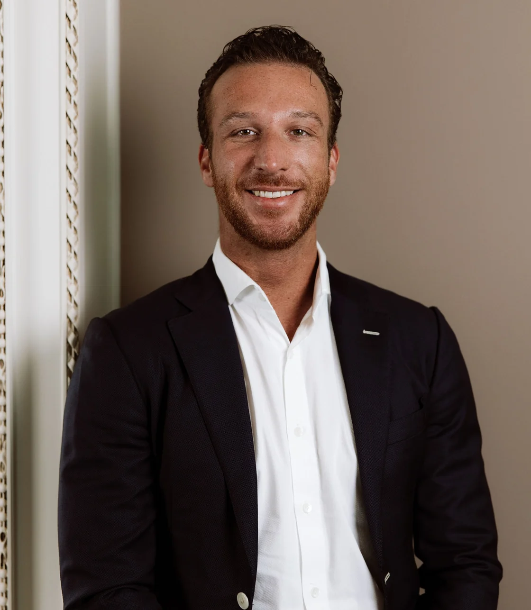

MIJN PERSOONLIJKE WEBSITE
Lex
Gielen.
Geboren in Nuenen, het dorp van Van Gogh. Zonder afbreuk te doen aan zijn kunst: ik probeer net zo creatief en innovatief te zijn, alleen dan met software.
Opgegroeid in Eindhoven, gek op tech, finance en nieuwe snufjes. Nu woon ik in Den Bosch. Hieronder lees je over de drie bedrijven die ik heb opgericht, en over mijn zijprojecten: A&L Living en sponsoring.

01 — HOE HET BEGON
Drie bedrijven.
Eén begin.
Het begon bij Capilex. Wat Capilex nodig had, werd een eigen bedrijf: eerst het klantonderzoek, en daaruit de data. Allemaal op eigen software.
Capilex verstrekt zakelijke leningen met vastgoed als onderpand. Voor het onderzoek naar de mensen achter een bedrijf bouwden we RiskResolve. Daaruit ontstond Compadex: bedrijfsgegevens, open voor iedereen. Inmiddels bedienen alle drie ook hun eigen klanten.
02 — CAPILEX · FINANCIERING
Het begon
met financiering.
Zakelijke leningen voor het mkb, met vastgoed als onderpand en beoordeeld in een eigen acceptatiesysteem.
Verdienmodel Rentemarge: het verschil tussen de rente die ondernemers betalen en de vaste rente aan investeerders, plus een afsluitprovisie per lening.
- Model
- Rentemarge + provisie
- Rendement investeerder
- 6,0 – 7,0% vast
Stand 3 november 2026: Defensief 6,0% (3 jaar) · Neutraal 6,5% (4 jaar) · Offensief 7,0% (5 jaar), vanaf € 100.000. Aan beleggen zijn risico’s verbonden.
03 — RISKRESOLVE · COMPLIANCE
Daarna: het risico
afwegen.
Daarna kwam het klantonderzoek: voor Capilex bouwden we RiskResolve, onderzoek naar de mensen achter een bedrijf, van ondernemer én investeerder.
Verdienmodel Abonnementsmodel (software als dienst) per organisatie, aangevuld met betalen per screening of controle.
- Model
- Abonnement + gebruik
- Controles
- UBO · ID · screening
04 — COMPADEX · BEDRIJFSDATA
Daaruit:
de data.
Uit RiskResolve ontstond Compadex: de bedrijfsgegevens die we nodig hadden, nu als Nederlandse bedrijvengids open voor iedereen.
Verdienmodel Betalen per opvraging: het basisprofiel is gratis, het volledige bedrijfsrapport per stuk.
- Bedrijven
- 4,4 miljoen
- Model
- Per opvraging
05 — OVER LEX
Wat nodig was,
bouwden we zelf.
Opgegroeid met techniek in Eindhoven. Altijd op zoek naar tech die complexe processen eenvoudig maakt.
 Opgericht in 2020. Zakelijke financiering met vastgoed als onderpand.
Opgericht in 2020. Zakelijke financiering met vastgoed als onderpand. Klantonderzoek, compliance en onboarding in één platform.
Klantonderzoek, compliance en onboarding in één platform. De Nederlandse bedrijvengids: gratis basisprofielen, rapporten per opvraging.
De Nederlandse bedrijvengids: gratis basisprofielen, rapporten per opvraging.- Sponsoring
Zijproject Golf, polo en zeilen, mede via Capilex. Bekijk →
 A&L Living
A&L LivingZijproject Onze eigen smart-home-app, uit interesse. Bekijk →
06 — CONTACT
Wat bouwen we
samen?
Ik spreek graag ondernemers, investeerders en partners.
- info@capilex.com
- Telefoon
- +31 (0)73 203 22 10
- lexgielen ↗
- Adres
- Dorpsstraat 1, Vught